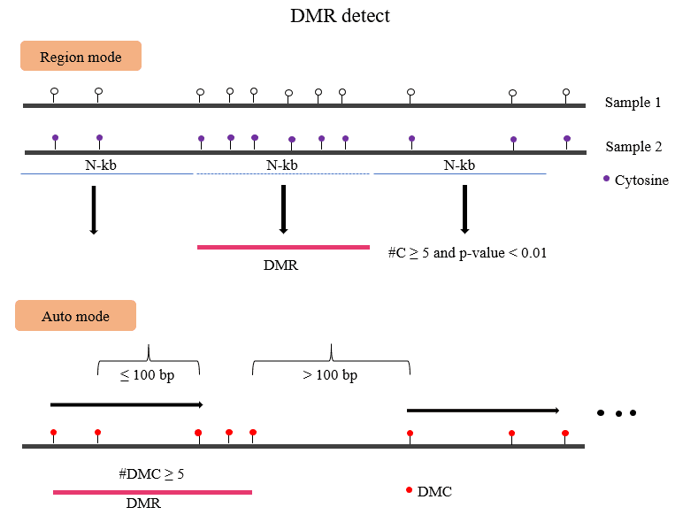

DiffMeth¶
BatMeth2 DMC or DMR/DMG¶
{kind=link}
You can get dmc and dmr result with:
$ batDMR -g genome.fa -o_dm mutant.output.dmc -o_dmr mutant.output.dmr \
-1 mutant.methratio.txt -2 WT.methratio.txt \
-methdiff 0.2 -minstep 100 -mindmc 5 -pval 0.01
obtained hyper、hypo dmc/dmr from dmc/dmr results
$ awk -v OFS="\t" 'gsub(/\,/,"\t",$NF)' mutant.output.dmr | \
awk '$(NF-2)>4 && $NF<=1' > mutant.output.hyper.dmr
$ awk -v OFS="\t" 'gsub(/\,/,"\t",$NF)' mutant.output.dmr | \
awk '!($(NF-2)>4 && $NF<=1)' > mutant.output.hypo.dmr
$ awk '$NF>0' mutant.output.dmc | awk '{print $1"\t"$2"\t"$2}' \
> mutant.output.hyper.dmc
$ awk '$NF<0' mutant.output.dmc | awk '{print $1"\t"$2"\t"$2}' \
> mutant.output.hypo.dmc
Usage¶
[ Main paramaters ] |
|
|---|---|
-o_dm |
output file |
-o_dmr |
dmr output file when use auto detect by dmc |
-g|–genome |
Genome files |
-1 |
sample1 methy files, sperate by space. |
-2 |
sample2 methy files, sperate by space. |
-mindmc |
min dmc sites in dmr region. [default : 4] |
-minstep |
min step in bp [default : 100] |
-maxdis |
max length of dmr [default : 0] |
-pvalue |
pvalue cutoff, default: 0.01 |
-FDR |
adjust pvalue cutoff default : 1.0 |
-methdiff |
the cutoff of methylation differention. default: 0.25 [CpG] |
-element |
caculate predefinded region, input file with id. |
-context |
Context for DM. [CG/CHG/CHH/ALL] |
-L |
predefinded regions or loci. |
-gz |
gzip input file. |
-h|–help |
|
Pre-definded regions (Gene/TE/UTR/CDS or other regions)
BatMeth2 batDMR -g genome -L -o_dm dm.output.txt -1 [sample1.methC.txt replicates ..] \
-2 [sample2.methC.txt replicates ..]
Auto define DMR region according the dmc
BatMeth2 batDMR -g genome -o_dm dm.output.txt -o_dmr dmr.output.txt -1 [sample1.methC.txt replicates ..] \
-2 [sample2.methC.txt replicates ..]
Output file¶
DMC
# format
Chrom position starnd context pvalue adjust_pvalue combine_pvalue corrected_pvalue \
cover_sample1 meth_sample1 cover_sample2 cover_sample2 meth.diff
DMR
# format
Chrom start end methlevelInSample1 methlevelInSample2 NdmcInRegion hypermdc,hypodmc
Tip
For feature requests or bug reports please open an issue on github.